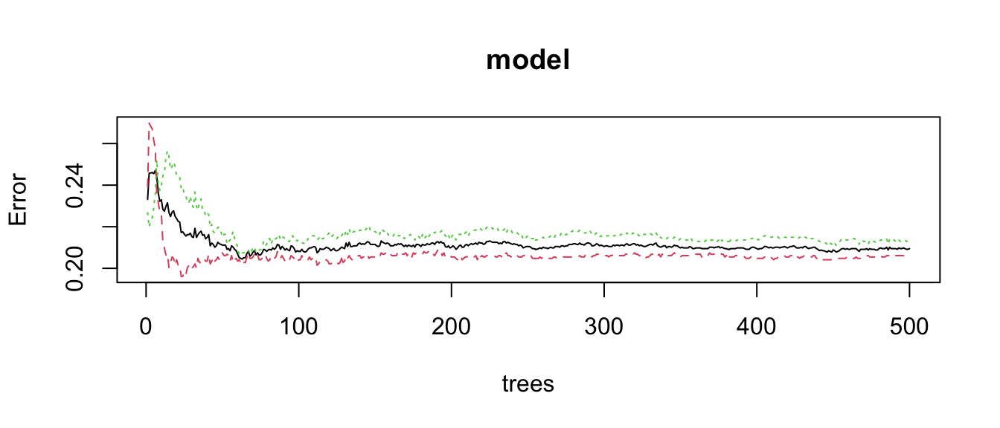
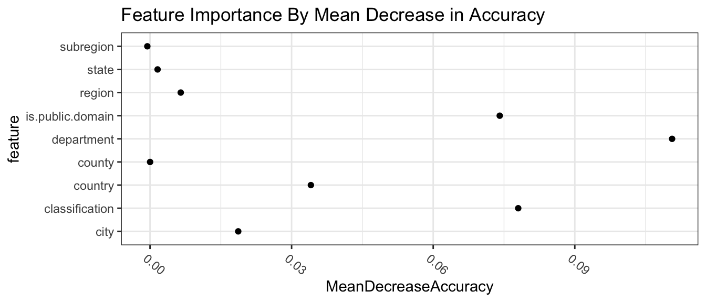

Chapter 4 [Model 3]
random forest
reference: https://www.r-bloggers.com/2021/04/random-forest-in-r/ https://stats.stackexchange.com/questions/493714/random-forest-variable-importance-plot-discrepancy
## is.public.domain
## is.highlight False True
## False 848 656
## True 306 1164## department
## is.highlight AmericanDecorativeArts
## False 36
## True 50
## department
## is.highlight AmericanPaintingsandSculpture
## False 13
## True 88
## department
## is.highlight AncientNearEasternArt ArmsandArmor
## False 19 51
## True 59 41
## department
## is.highlight ArtsofAfricaOceaniaandtheAmericas AsianArt
## False 47 119
## True 83 42
## department
## is.highlight CostumeInstitute DrawingsandPrints
## False 93 525
## True 89 49
## department
## is.highlight EgyptianArt EuropeanPaintings
## False 96 12
## True 81 82
## department
## is.highlight EuropeanSculptureandDecorativeArts
## False 145
## True 60
## department
## is.highlight GreekandRomanArt IslamicArt MedievalArt
## False 65 47 30
## True 93 87 42
## department
## is.highlight ModernandContemporaryArt MusicalInstruments
## False 48 19
## True 94 84
## department
## is.highlight Photographs RobertLehmanCollection
## False 121 10
## True 96 82
## department
## is.highlight TheCloisters TheLibraries
## False 8 0
## True 45 123## Confusion Matrix and Statistics
##
## Reference
## Prediction False True
## False 1293 261
## True 211 1209
##
## Accuracy : 0.8413
## 95% CI : (0.8277, 0.8543)
## No Information Rate : 0.5057
## P-Value [Acc > NIR] : < 2e-16
##
## Kappa : 0.6824
##
## Mcnemar's Test P-Value : 0.02411
##
## Sensitivity : 0.8597
## Specificity : 0.8224
## Pos Pred Value : 0.8320
## Neg Pred Value : 0.8514
## Prevalence : 0.5057
## Detection Rate : 0.4348
## Detection Prevalence : 0.5225
## Balanced Accuracy : 0.8411
##
## 'Positive' Class : False
## ## Confusion Matrix and Statistics
##
## Reference
## Prediction False True
## False 308 149
## True 47 240
##
## Accuracy : 0.7366
## 95% CI : (0.7033, 0.7679)
## No Information Rate : 0.5228
## P-Value [Acc > NIR] : < 2.2e-16
##
## Kappa : 0.4786
##
## Mcnemar's Test P-Value : 5.422e-13
##
## Sensitivity : 0.8676
## Specificity : 0.6170
## Pos Pred Value : 0.6740
## Neg Pred Value : 0.8362
## Prevalence : 0.4772
## Detection Rate : 0.4140
## Detection Prevalence : 0.6142
## Balanced Accuracy : 0.7423
##
## 'Positive' Class : False
## 
